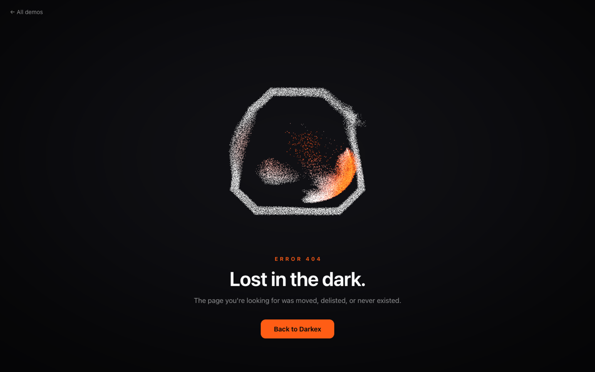
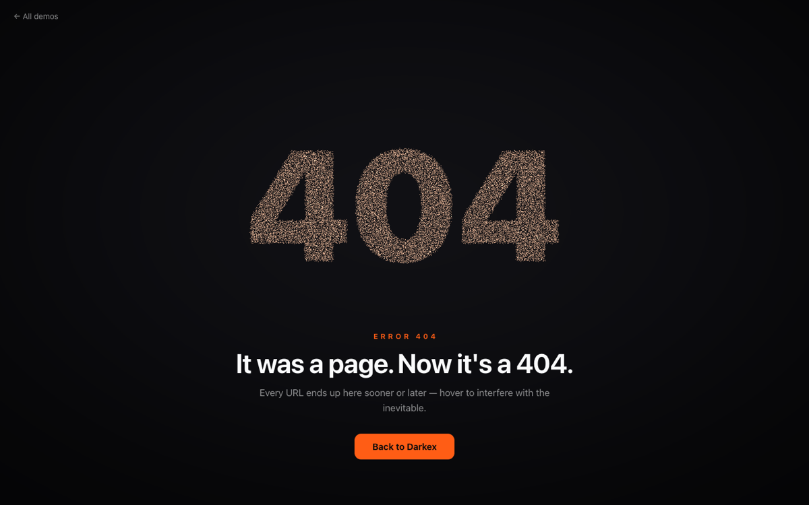
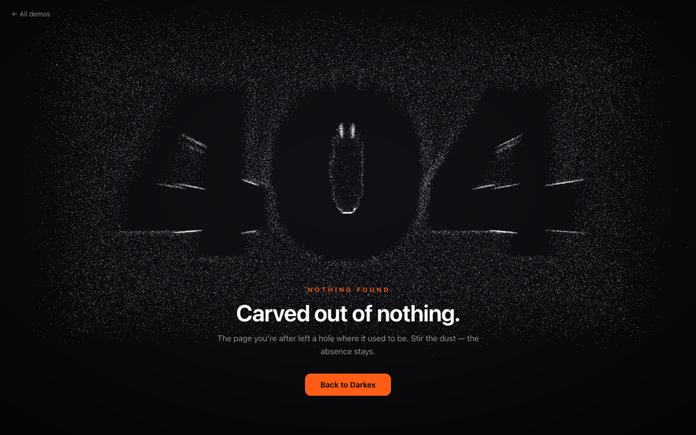
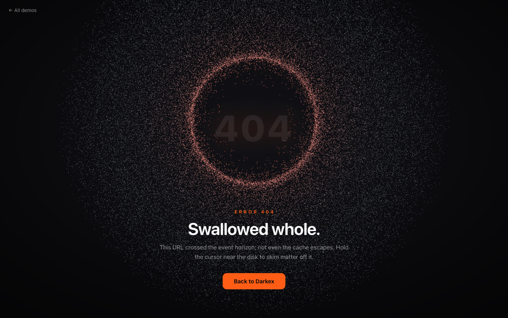

Assembly elegant
The mark gathers itself out of drifting dust; your cursor scatters embers through the line-work.

Inevitable kinetic type
One population of grains, two homes: the mark and the error trade places forever — interfere mid-flight.

Negative Space atmospheric
A slab of fog with the error carved out of it. Stir all you like — the absence stays.
Crumble physics toy
Brush the mark and it comes apart into falling sand, piles up, then hauls itself back together.

Event Horizon cosmic
An accretion disk feeds the hole where the page used to be. The cursor is a second gravity well.